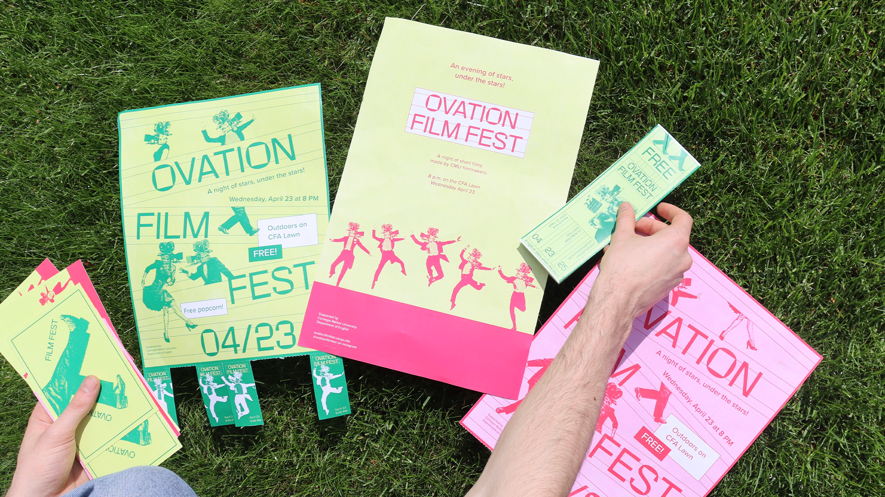
A scaleable brand system establishes a student film festival in its second year.
I joined the small team of students behind Ovation Film Festival to reimagine the festival’s identity for a new outdoor venue. Ovation is an end-of-year celebration of student-made films, held outdoors for the first time. I designed the branding to be bright, playful, and summery, while infusing retro motifs like marquees and dancing figures.
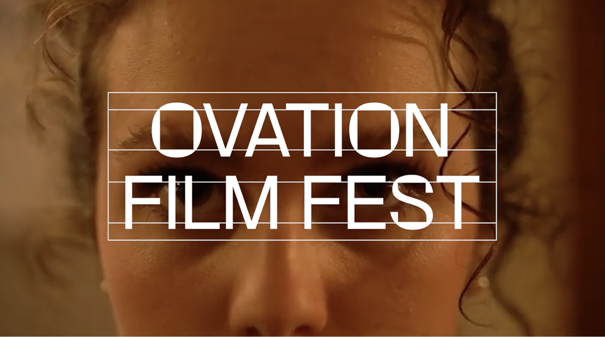
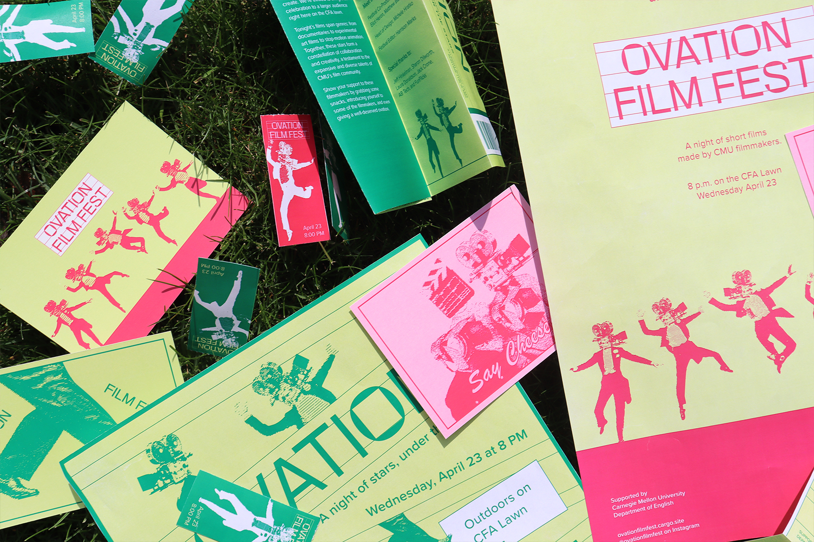
A logo blending the old and new.
The core of the system began from the logo, inspired by theater marquees. The logo is set in Rotonto, designed by Marcello Raffo.
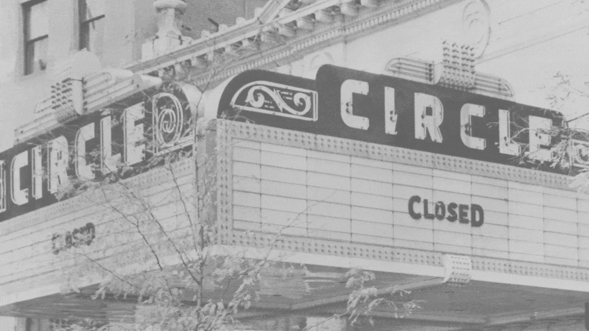
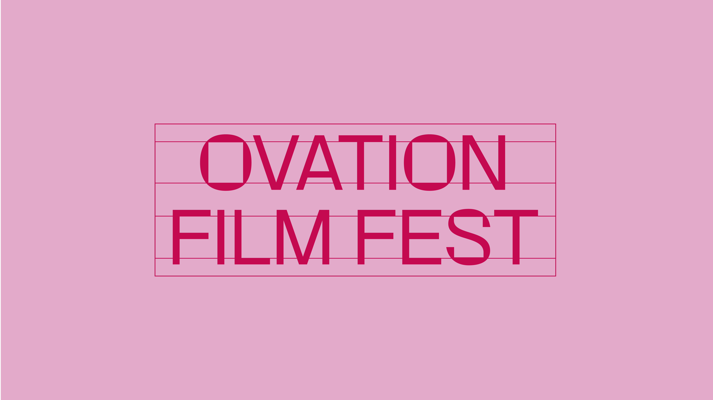
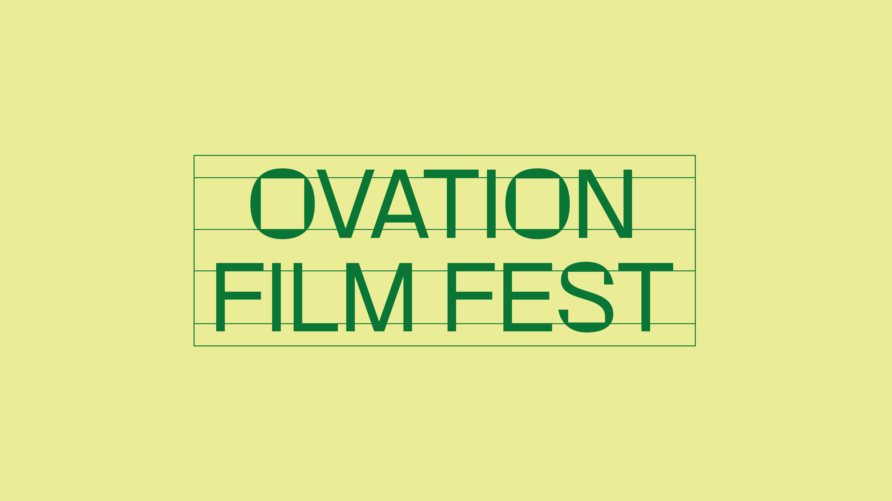
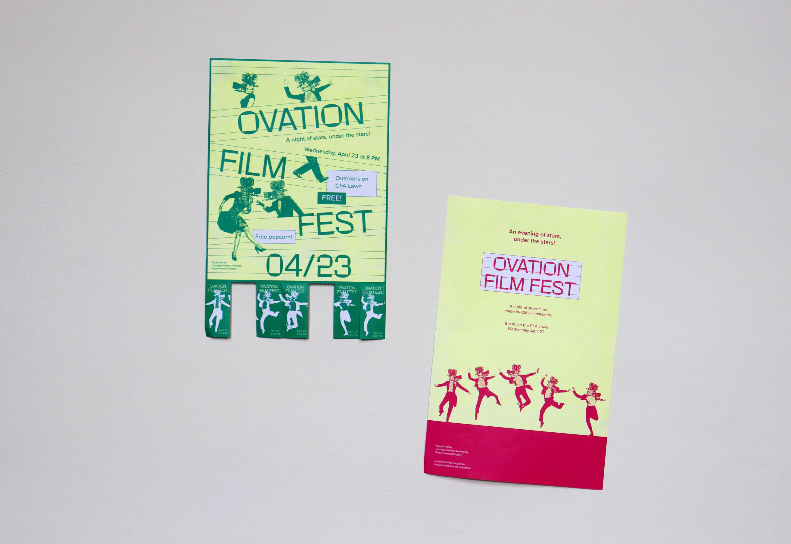
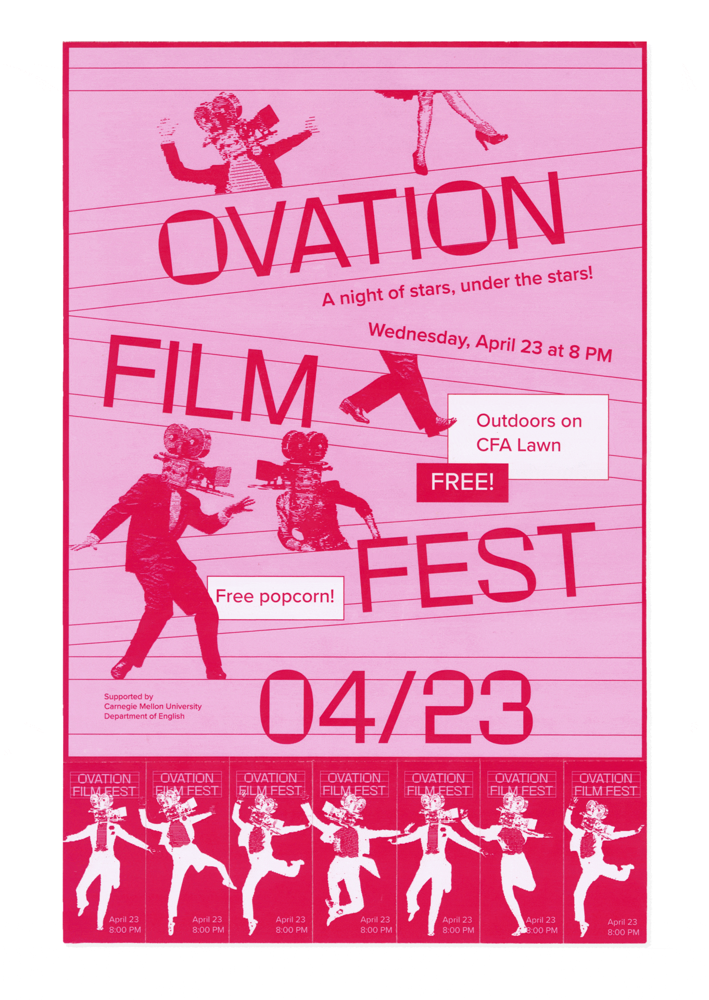
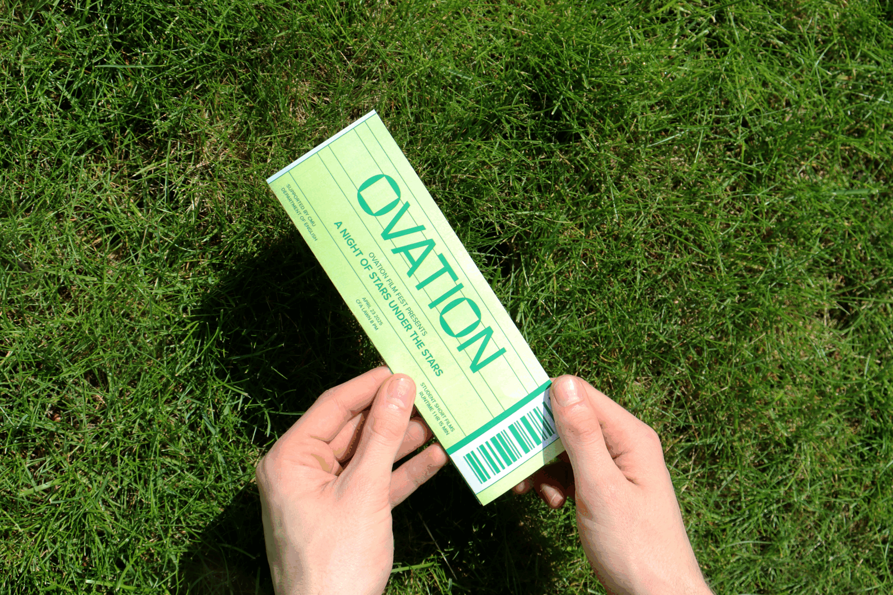
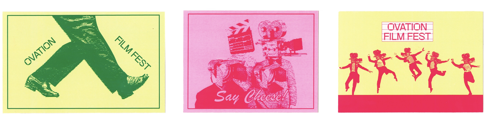
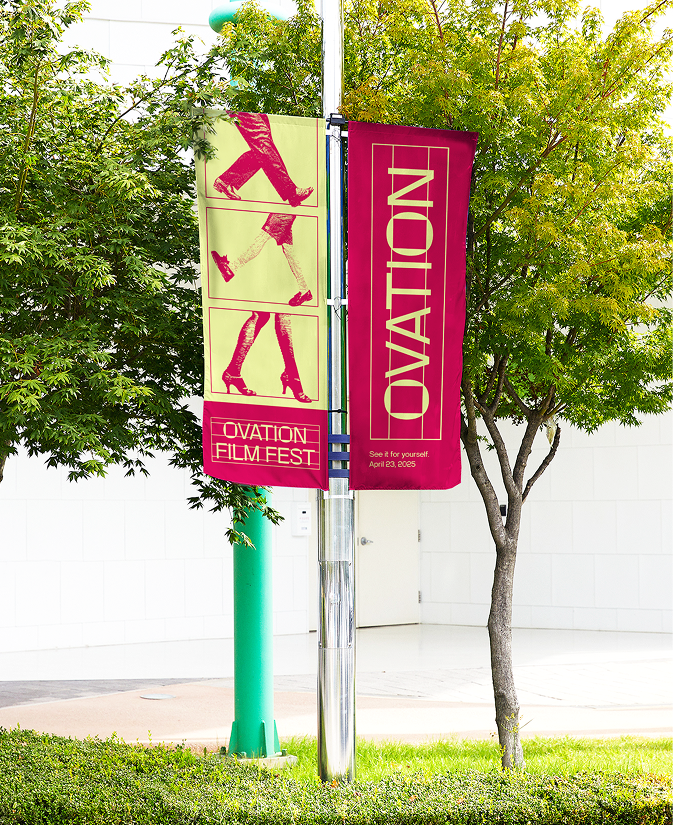
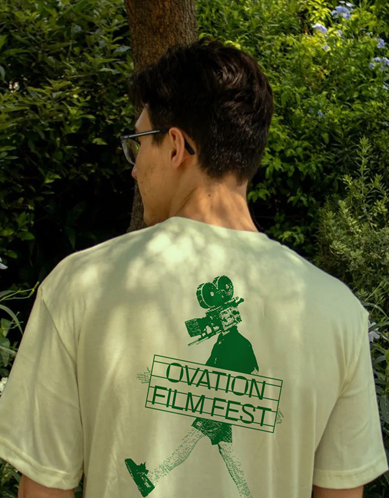
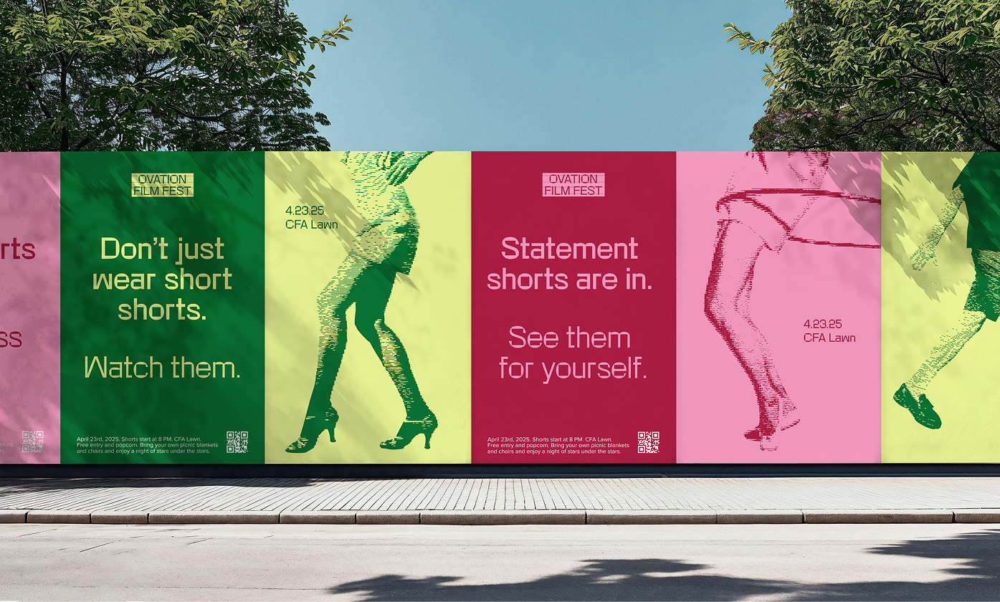
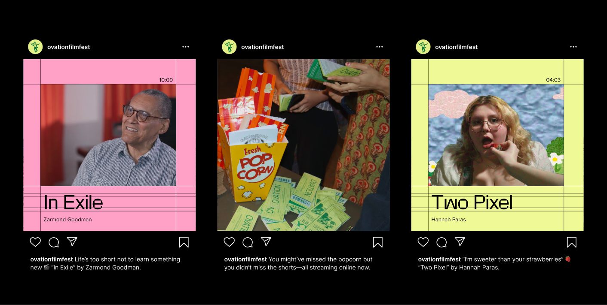
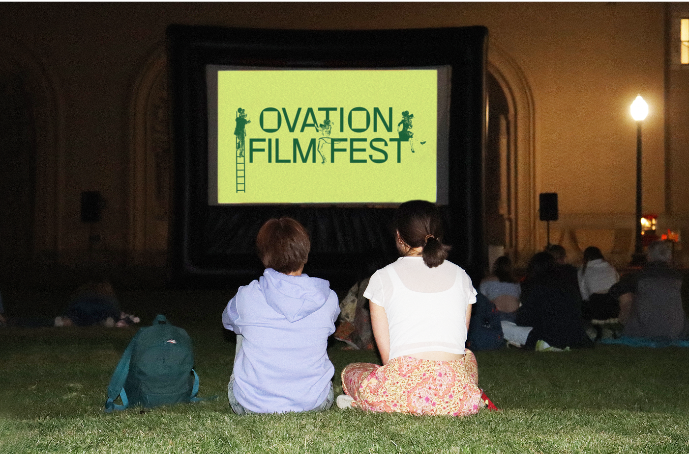